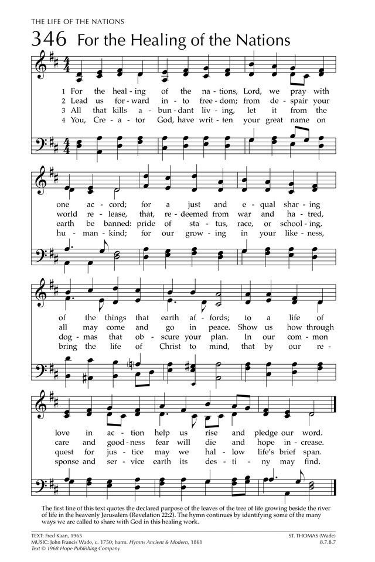

0289 0346 For the Healing of the Nations _Fred
Kaan 求主醫治萬族 ▲ ST. THOMAS (Wade)
| 簡介
For
the Healing of the Nations |
| The first line of this text quotes the
declared purpose of the leaves of the tree of life growing beside the
river of life in the heavenly Jerusalem (Revelation 22:2). The hymn
continues by identifying some of the many ways we are called to share
with God in this healing work. |
|
|
|
|
1 For the healing of the nations,
Lord, we pray with one accord,
for a just and equal sharing
of the things that earth affords.
To a life of love in action
help us rise and pledge our word.
2 Lead us forward into freedom;
from despair your world release,
that, redeemed from war and hatred,
all may come and go in peace.
Show us how through care and goodness
fear will die and hope increase.
3 All that kills abundant living,
let it from the earth be banned:
pride of status, race, or schooling,
dogmas that obscure your plan.
In our common quest for justice
may we hallow life’s brief span.
4 You, Creator God, have written
your great name on humankind.
For our growing in your likeness,
bring the life of Christ to mind
that by our response and service
earth its destiny may find.
|
552求主醫治萬族
求主醫治萬邦萬族，同心仰獻禱聲、
祈盼善用土地資源，公平分享美物豐；
行動實踐仁愛生命，信諾遵守奮力勤。
求領掙脫灰心失望，邁向自得釋放，
拋開怨恨，消除戰禍，人人出入皆平安；
教我怎樣愛顧關懷、消除恐懼、增盼望。
凡是危害生命豐盛，唯願除滅、加阻止，
階級、種族、高傲、偏見阻礙展現主意旨，
短促生命獻主祝聖，忠心渴望真公義。
造物主宰按己形像--人類靈魂刻聖名；
願我思想基督生平，長成身量肖主形，
應主召喚，事奉殷勤，地上主旨得建成。 |
|
 |
| |
|
516 上帝交代人類管理
英語：God gave to us in trust to hold
1960 年代後期，英國突然興起寫聖詩的熱潮，當時的熱門人物是格林（Fred Pratt Green, 1903-2000)、闞福瑞（Fred
Kaan, 1929-2009）與任百恩（Brian Wren, 1936 年生），他們三人是「聖詩大爆炸」（Hymn
explosion）的中心人物。
筆者1968 年開始受亞洲教協城鄉宣教委員會（URM, CCA）之託到東南亞各國蒐集都市新歌時，就看到闞福瑞牧師許多關懷社會公義及環保議題的新詩。1972
年我們曾邀請他到印尼雅加達開會，幫忙筆者將當時已蒐集的都市新歌重寫成英語歌詞，他非常有才華，常在不到幾分鐘之內就能將筆者告訴他的內容以詩的形式寫出來。這首是他1970
年所寫，筆者與他會面之後返台，以當時本人慣用的作曲法依英文譜上此曲。
歌詞是承認人破壞了上帝所創造美麗的世界，未曾真實面對後果，求主赦免，並維護受造的完整、復。該詩首見於1972 年之《亞洲都市新歌》，後經張剛榮牧師（1939
年生）翻成台語，收錄於1985 年之《新聖詩Ｉ》。
本詩可唱於環保主日，或任何有關維護大自然之完整的議題。（LIT）
|
Title: |
For the Healing of the Nations |
|
Author: |
Fred Kaan (1965) |
|
Meter: |
8.7.8.7 |
|
Language: |
English |
|
Publication Date: |
2013 |
|
Scripture: |
|
For the
Healing of the Nations | Hymnary.org
The first line of this text quotes the declared purpose of the leaves of the
tree of life growing beside the river of life in the heavenly Jerusalem
(Revelation 22:2). The hymn continues by identifying some of the many ways we
are called to share with God in this healing work.

In his epistle, James has a lot to say about social justice: “Religion that
is pure and undefiled before God, the Father, is this: to visit orphans and
widows in their affliction, …. My brothers, show no partiality as you hold the
faith in our Lord Jesus Christ, the Lord of glory.” (James 1:27, 2:1 ESV) A more
pointed passage is this: “Behold, the wages of the laborers who mowed your
fields, which you kept back by fraud, are crying out against you, and the cries
of the harvesters have reached the ears of the Lord of hosts. You have lived on
the earth in luxury and in self-indulgence.” (James 5:4-5a ESV) This hymn deals
with similar ideas, as a prayer that we will live in a just and loving way, and
it ends with a reminder that we are made in God's image.
Text:
Fred Kaan wrote this hymn in 1965 for a service for Human Rights Day (December
10) at Pilgrim Church in Plymouth, England. It is his most widely published
hymn, and was used to celebrate the 25th anniversary of the United Nations and
the 50th anniversary of the International Labor Organization (The Hymn Texts of
Fred Kaan, Fred Kaan, p. 35). This hymn has four stanzas. The first three
stanzas deal with common societal problems: poverty, war, and prejudice. The
fourth stanza is a reminder that humankind is created in the image of God.
Tune:
This text has been associated with a number of different tunes, of which the
three most popular are WESTMINSTER ABBEY, CWM RHONDDA, and REGENT SQUARE. Fred
Kaan wrote “When introduced in a 'Come and Sing' lecture at the Westminster
Abbey, London 1973, it was sung to Henry Purcell's WESTMINSTER ABBEY with which
it has been principally associated ever since” (The Hymn Texts of Fred Kaan, p.
35).
Ernest Hawkins arranged the final Alleluias from Purcell's anthem “O God, thou
art my God” as a hymn tune named BELLEVILLE in 1843. In 1939, Sidney Nicholson,
a music consultant on the revision of Hymns Ancient and Modern, included the
tune in the Shortened Music Edition. It was renamed WESTMINSTER ABBEY in honor
of Purcell's long association with that famous church.
CWM RHONDDA is a well-known Welsh tune. It was written in 1907 by John Hughes, a
Welshman who spent most of his life as a railway worker. The tune name literally
means “Rhondda valley.” The Rhondda is a river that flows through a coal-mining
district of Wales. When this text is sung to CWM RHONDDA, repeat the last line
of each stanza to fit the music.
REGENT SQUARE is most often associated with the Christmas text “Angels From the
Realms of Glory.” The tune was composed by Henry Smart, and first published in
Psalms and Hymns for Divine Worship in 1867. It was named after the Regent
Square Presbyterian Church in London, whose minister, James Hamilton, was editor
of that hymnal.
Notes
This tune is likely the work
of the composer named here, but has also been attributed to others as shown in
the instances list above
When/Why/How:
This hymn is suitable for use on any occasion where social justice is a theme.
If CWM RHONDDA is the tune used, try singing a stanza unaccompanied. For
preludes or other service music, organ settings of CWM RHONDDA can be found in
“Three Partitas on Welsh Hymn Tunes” and “Shine on Us,”, while “Partita on
Westminster Abbey,” contains seven different settings of that tune for organ.
Tiffany Shomsky,
Hymnary.org
https://www.umcdiscipleship.org/resources/history-of-hymns-for-the-healing-of-the-nations
History of Hymns: "For the Healing of the Nations"
"For the Healing of the Nations"
Fred Kaan
The United Methodist Hymnal, No. 428
Fred Kaan
For the healing of the nations,
Lord, we pray with one accord;
For a just and equal sharing of the things
for the things that earth affords;
to a life of love in action
help us rise and pledge our word,
help us rise and pledge our word.*
During the 1960s and 1970s, four English-language hymn writers emerged on the
other side of the Atlantic Ocean who were the leaders of the “hymnic explosion.”
Fred Pratt Green (1903-2000), Timothy Dudley-Smith (b. 1926) and Brian Wren (b.
1936) all were born in Great Britain.
Unlike the other three, Fred Kaan (b. 1929), though ordained in the United
Reformed Church and serving in England, is a native of Haarlem, The Netherlands.
These writers, along with their counterparts from the United States, Canada, New
Zealand and Australia, brought the language and theological vision of hymnody
out of the earlier Victorian era into the late 20th century. In many cases,
their work continues to enrich 21st-century congregational song.
After serving congregations in England, Dr. Kaan established his ecumenical
credentials, serving from 1968-1978 as minister-secretary of the International
Congregational Council in Geneva, Switzerland and the executive secretary of the
World Alliance of Reformed Churches.
He returned to England in 1978 as a moderator of the Western Midlands Conference
of the United Reformed Church. From 1986-1989 he returned to parish ministry in
the United Reformed Church.
Carlton R. Young, editor of The UM Hymnal, says of Dr. Kaan, “His linguistic
ability, ecumenical service and fervent concern for the powerless are apparent
in his hymns, numbering more than 200.”
Collections of his hymns appear in this country as The Hymn Texts of Fred Kaan
(1985), Planting Trees and Sowing Seeds (1989) and The Only Earth We Know
(1999). He was elected Fellow of the Hymn Society in the United States and
Canada in 2001. His hymns have been translated into more than 15 languages.
In 1985, Dr. Kaan reflected on “For the healing of the nations,” saying, “Of all
the hymns I have written, this is the text that has been more widely reprinted
and incorporated in major hymnbooks than any other. It was first used in 1965 in
a worship service at the Pilgrim Church, Plymouth [where I was then serving as
pastor], to mark Human Rights Day [Dec. 10]. Subsequently, it has been used on
many official occasions, such as the 25th anniversary of the United Nations
organization.”
Turning to the hymn text itself, the first stanza is a prayer for all nations
and a pledge to a “just and equal sharing of the things that earth affords.” The
second stanza continues to pray that we will be led “forward into
freedom”—freedom from “despair . . . war and hatred.”
Stanza three petitions that, “All that kills abundant living . . . from the
earth be banned.” The writer continues to provide examples of practices that
stifle “abundant living,” including “pride of status, race, or schooling” and
“dogmas that obscure your plan.” He concludes the stanza by saying, in essence,
that life is too short not to seek justice as “our common quest.”
The final stanza addresses God directly and reminds us that humankind is
“growing in [God’s] likeness [as we] bring the life of Christ to mind”—a current
expression of the Imago Dei—humanity created in the image of God. The hymn
concludes with the affirmation that “through our response and service earth its
destiny may find.”
Dr. Kaan is a prophetic poet. As we approach the celebration of Independence Day
in the United States, perhaps his hymn expresses patriotism in Christian
terms—to care for a world where we are inter-dependant and to use our political
will, global influence and natural resources for the good of all humanity in
seeking justice and “abundant living” for all.
*© 1968 Hope Publishing Company; Carol Stream, Illinois 60188. All rights
reserved. Used by permission.
Dr. Hawn is professor of sacred music at Perkins School of Theology, SMU.
https://www.methodist.org.uk/our-faith/worship/singing-the-faith-plus/hymns/for-the-healing-of-the-nations-stf-696/
For the Healing of the
Nations
Ideas for use

Since this hymn is worded as a prayer (“For the healing of the nations, Lord, we
pray with one accord”), why not use it intentionally as one – either sung or
spoken. If the verses are spoken, they divide well between leader and
congregation by using the final two lines of each verse as a congregational
response.
If sung, it is worth trying out both the suggested tunes for this text – Grafton
(the “set” tune) and the alternative “Rhuddlan”. The latter has a more direct,
“forward-looking” feel about it and is perhaps easier to sing.
Further information
 from the Soviet Union marking the 15th anniversary of the Universal Declaration of Human Rights")
Fred Kaan said that this was probably the most widely used hymn he had ever
written. He wrote it to mark Human
Rights Day (10
December) in 1965 – hence the title he gave it: “A hymn on human rights”. It has
since been sung at numerous national and international occasions around the
world, including the 25th anniversary of the United Nations (1970), and the 50th
anniversary of the International Labour Organisation (1969, the same year in
which the organisation was awarded the Nobel Peace Prize).
At Fred’s request, the original text was amended to incorporate inclusive people
language (e.g. verse 2, line 4: “Men may come and go in peace” amended to “All
may come and go in peace”). In Singing the Faith, God language has also been
addressed so that the opening line of verse 2 now reads “Lead us forward into
freedom”, rather than “Lead us, Father…”
The straightforwardness of the language Fred Kaan uses makes his words widely
accessible. Indeed, for the first three verses, one might feel that the hymn
could be spoken with equal commitment by a politician or a charity campaigner;
in a council chamber or a school classroom. Only when we reach the final verse
is Fred’s guiding conviction made clear: that Christians are called to enable
and defend human rights because we are all made in God’s image and are called to
respond as Jesus would have done:
You, Creator-God, have written
your great name on humankind
for our growing in your likeness
bring the life of Christ to mind;
that by our response and service
earth its destiny may find.
Though the hymn alludes to a number of verses from scripture (see Hymnary.org),
the guiding theme is derived from words in The Book of Revelation: "On either
side of the river is the tree of life ... and the leaves of the tree are for the
healing of the nations." (Revelation
22:2).
This statement was also inspired the Methodist Church’s 2015
Easter Offering campaign
and resources.
 Fred
Kaan was one of the most prolific and innovative of English-speaking hymn
writers in the twentieth century. Many of his texts reflect his passionate
commitment to social justice as an integral part of the Gospel message. (He
wrote “Sing we a song of high revolt”, a version of Mary’s song in Luke
1:46-55,
to be sung to the tune of the Red Flag.) In his foreword to Fred Kaan’s 1999
collection, The
Only Earth We Know,
Caryl Micklem writes:
Fred
Kaan was one of the most prolific and innovative of English-speaking hymn
writers in the twentieth century. Many of his texts reflect his passionate
commitment to social justice as an integral part of the Gospel message. (He
wrote “Sing we a song of high revolt”, a version of Mary’s song in Luke
1:46-55,
to be sung to the tune of the Red Flag.) In his foreword to Fred Kaan’s 1999
collection, The
Only Earth We Know,
Caryl Micklem writes:
“People who thing that the Church has only its own business to mind… tend to
accuse Kaan of political partisanship because, like the eighth-century Hebrew
prophets, he has a burning concern for social justice and global reconciliation
and because he will not stop challenging us to ‘rise’ and to ‘risk’…” (as,
indeed, he does in the first verse of this hymn).
This passion was formed in Holland, where Fred Kaan was born (in 1929) and lived
until the early 1950s. During the Nazi occupation of the country during World
War 2, he experienced physical deprivations and the “hunger winter” of 1944/45
in which three of his grandparents died. His parents were involved in the Dutch
Resistance and for two years they sheltered a Jewish woman in their home, as
well as a political prisoner who has escaped Belsen.
Fred Kaan’s hymns are formed out of such personal experience and also, following
his move to England and the decision to enter the ministry of the Congregational
Union of England and Wales, his sense that the hymns being sung week by week
simply didn’t address the issues and concerns of Christians living in
contemporary (and especially modern urban) society.
https://www.methodist.org.uk/media/13879/696-for-the-healing.mp3
From Wikipedia, the free encyclopedia
Jump to navigationJump
to search
The Reverend Frederik Hermanus Kaan (27
July 1929 — 4 October 2009) was a clergyman of Dutch origin who
served in the Congregational
Church in Britain (subsequently part of the United
Reformed Church) and a prodigious hymnwriter.[1]
Early life[edit]
Kaan was born in Haarlem, Netherlands,
and his teenage years coincided with the Nazi occupation.
His parents were committed anti-Nazis who were active in the Dutch
Resistance; guns and fugitives were hidden in the family home.
The family were affected by the Nazi
induced famine in early 1945, when three of Kaan's
grandparents died.[1]
His experiences of wartime Netherlands
had a lasting effect upon Kaan. His Christianity had previously been
nominal; he had not entered a church until his late teens, despite
his baptism in the Grote
Kerk, Haarlem. He became a pacifist,
attended church and was confirmed in
1947; subsequently, he studied theology and psychology at Utrecht
University.[1][2]
Ministry[edit]
Kaan had become a pen-friend of
an English Congregationalist and through this contact was attracted
to the denomination. In 1952 he commenced studies at Western
College, Bristol, and in 1955 he was ordained as a
Congregational minister and
took up his first pastorate at the Windsor Road Congregational
Church in Barry,
south Wales. In 1963, he was called to
Pilgrim Church in Plymouth,
where the congregation were particularly responsive to his writing
talents.[1][2]
In 1968, Kaan was sent to Geneva as
minister-secretary of the International
Congregational Council, to help unite it with the Presbyterian
Alliance to form the World
Alliance of Reformed Churches. With the Alliance until 1978, his
work centred on issues of human rights, inter-church relations, and
communications, editing the Alliance's journal and co-producing the
multilingual radio programme Intervox.[1]
During this time, Kaan served as
chairman of the Council
for World Mission, an offshoot of the overseas missionary work
of the British Congregational churches. He claimed to have visited
faith communities in 83 countries. He also gained an honorary Th.D. from Debrecen
Theological Academy (Hungary) and a Ph.D. from Geneva
Theological College.[1][2][3]
The nomadic life-style did not suit
Kaan, however, and, wanting to be closer to people, he became Moderator of
the West Midlands province of the United Reformed Church (URC), a
post he held for seven years. This was followed in 1985 by a local Anglican, Baptist, Methodist and
URC team ministry in Swindon;
his final ministry.[1]
Kaan's formal ministry ended in 1989,
but he continued work with a four-year term as honorary secretary of
the Churches' Human Rights Forum in Britain and Ireland. His
hymnwriting also continued.[1][2]
Hymn writing[edit]
Kaan managed a significant literary
productivity despite his pastoral commitments: including six
collections of hymns, with translations into over fifteen languages.
Kaan said that he wrote his first hymn when aged 34.[3] During
his pastorate in Plymouth, the first edition of Pilgrim
Praise was published in 1968, going into second and
third editions in 1972 and 1975. Paul
Oestreicher commissioned a hymn for Remembrance
Sunday, sung for the first time in Coventry
Cathedral, but (in Oestreicher's opinion), freeing it of its
anachronistic nationalist theology; Kaan's "For the Healing of the
Nations" inspired the title of his biography by Gillian
Warson.[1][2]
In retirement, Kaan worked with the
Norwegian composer Knut
Nystedt to create a number of works, and with
Canadian Ron
Klusmeier, who composed over a hundred tunes for Kaan texts. He
was made a Fellow of the Hymn
Society in the United States and Canada in 2001,
and in 2002 was awarded the Chancellor's Gold Medal by the Potchefstroom
University in South Africa.[2]
Private life[edit]
In 1954, Kaan married Elisabeth ("Elly")
Steller, a daughter of German and Dutch missionary parents in Indonesia,
and had three children, Martin, Peter and Alison. They separated in
1989, a painful experience that led him to end his formal pastoral
ministry. Elly died in 1993, and Kaan married Anthea Cooke, a doctor
in general
practice in Birmingham.
When Anthea retired, the couple moved to the Lake
District, but Kaan continued to work as a speaker, preacher and
writer.[1][2]
Fred Kaan died in Penrith on
4 October 2009, having suffered from Alzheimer's
disease and cancer in his last years.[1]
The Rev Roberta Rominger, general
secretary of the United Reformed Church, said: "We thank God for the
gift to us of Fred Kaan, whose passion for peace and justice,
ecumenical drive and ability to enable the Church to sing the faith
in plain but moving speech have had a major influence on the Church
in the last half of the twentieth century."[4]
References
https://en.wikipedia.org/wiki/Fred_Kaan
http://cmpc.health999.net/song/NewSongMenu.htm
新普天頌讚歌曲明細
| 179 |
平安臨世 |
Peace among earth's peoples is like a star |
顯現 |
179 |
179平安臨世
平安曾臨世間猶如景星，光輝舉目能見，
雖遠還近，遙遠難觸，但願能擁捉，
平安來臨世間，雖遠還近。
非分渴想引致禍端戰爭，因何不斷炫耀無道權衡？
慾望所驅，非因信靠主：
祂聽禱告祈求，答應所呈。
貪心慾念、謀算--豈會祈求；邀主祢--
供應者--前路光照？禱告所需，下至陷貪慾，
不為一己籌算，免墮引誘。
需於心中鬥爭尋求擇放--世上矛盾、紛爭止息有望。
當同分享禱告的異象：
所有人類認識主賜平安。
平安曾臨世間猶如景星，領人尋見馬槽，
雖遠還近，看它榮光，驚喜或恐慌：
普世人類祈望平安來臨！
| 585 |
主賜人類智慧 |
The earth, the sky, the oceans |
文化科技 |
585 |
585主賜人類智慧
天空、洋海與大地，一切受造眾生，
世間萬有與奧祕，皆主執掌權衡，
上主託管祂創造，派分人類責任，
神賜人剛勇、力量，追求創新智能。
自出母胎有任命：擔負整理、管治，
尋找目的、釋真理，追索生命意義。
神召人類作險探，研究、驗證學問，
與眾分享美成果，好處造福萬民。
上主已賜人智慧追查研究之方，
尋出寰宇多能量，土壤、深海寶藏。
招展、躍進新科學，研藥克勝痛苦，
知識、技術速加增，主託任命毋負。
如今立志勤服務，懇求基督幫助，
獻心盡忠作管家，處理世上事務，
此間、太空所發現藏隱、奇妙知識，
求賜智慧善運用，促進人類福祉。
| 587 |
尋求主旨和平 |
You gave us. God, this earth |
受託 |
587 |
587尋求主旨和平
神賜大地，讓世人珍惜、擁有、
管理時空，藉以頌讚至高；
奈何沉淪，因人被貪婪掣肘：
濫用、糟蹋、喪失主賜自由。
違背上主，人心張狂益猖獗；
槍林彈雨使上主心破碎，
紛爭之中取利，竟與主敵對：
執拗偏私將主世不毀摧。
人類自誇，罔顧珍貴的生命，
導彈、地雷、死亡陷阱滿布，
伸延咒詛，彼此殺戮長爭競，
每天重釘聖子，十架受辱。
求主興起，民中先知作引領；
言行、靜默尋求主旨和平，
疑懼盡消，指向團結同喚醒：
務使被擄得釋、傷創康寧。
更新信心，求使堅忍靠耶穌，
但願男女復有上主形像，
聖言求賜釋放世人追隨主，
將我利劍打作建造之杖。
| 586 |
全地屬主 |
God of concrete. God of steel |
文化科技 |
586 |
586全地屬主
混凝堅土鋼筋粗，內燃引擎推輪軸，
熾熱鍋爐水蒸騰，石油煤氣原子能，
構樑直楝跨巨柱，動力、能源屬上主。
公路縱橫萬里長，鐵翼銀鷹越海洋，
郵電通訊投遞快，火箭沖天無疆界，
衛星傳播遍寰宇，速度、睿智屬上主。
科學工藝天天新，精算電腦確奇珍，
詩詞歌賦巧成曲，經史子集供研讀，
聖經啟示通今古，知識、真理屬上主。
上主榮光滿天地，創造萬物顯奧祕，
基督復活勝死亡，彰顯能力克魔王，
救贖人類離痛苦，救恩、大愛屬上主。
| 797 |
天與地歡呼 |
Heaven and earth |
宣召 |
797 |
797天與地歡呼
天與地歡呼，當敬拜你創造主！
向主呈讚歌，因祂是你源頭。
向主唱新歌，應許同在前行導引，
在主愛�堙A無不改變更新。
| 詩046b |
萬軍之耶和華 |
The Lord of the armies of earth and sky |
詩篇 |
046b |
046b萬軍之耶和華
上主是我們的避難所、力量、
患難中隨時的幫助。
地雖改變，我們不害怕；
山雖沉落深海，我們不怕。
海水翻騰，群山震顫，
我們也不害怕。(重句)
深廣的河流使上主的城充滿喜悅，
這城是至高上主居住的聖所。
上主在其中，城必不動搖，
天一亮祂幫助這城。
外邦喧嚷，列國動搖，
上主發聲，地便鎔化。(重句)
來看上主的作為，看祂怎樣使地荒涼。
祂止息刀兵，直到地極；
祂斷槍，焚燒戰車。
“安息！當知我是上主，
我必在遍地萬邦中被尊崇。” (重句)
(重句)
萬軍之耶和華，雅各之主，
是我們高臺堡壘，與人同在！
| 詩065 |
大地屬主 |
The earth is Yours, 0 God |
詩篇 |
065 |
065大地屬主
上主，大地屬祢，雨水恩霖潤澤，
流轉不息，河川滿溢，地土又再結實。
上主，泥土屬祢，晨露恩澤幼苗，
火熱陽光使它成熟，五穀茁壯豐茂。
上主，山岡屬祢，原野青蔥一片，
提供群畜綠草無缺，主恩隨處可見。
豐足大地屬祢，能供畜牧、耕種：
泥土、種子、陽光、雨水，謝主賜恩豐隆！
| 220 |
耶穌一信徒榜樣 |
Jesus, when You walked this earth |
大齋 |
220 |
220耶穌一信徒榜樣
追溯主耶穌腳蹤，生命充滿仁愛、犧牲；
婦女藉祢得尊重，痲瘋治癒，重獲新生，
被棄、瘋子、眾罪人，藉祢親嘗主慈仁。
猶大遍布祢足跡，憑愛驅使，導向清晰，
饑者拾穗增體力，違例、不潔，主未責斥，
民所需，主顯良善；律法本義--恩福滿。
主耶穌一生、工作展示子民生活榜樣，
生命成就主囑託，仁愛、寬恕、公平、開放，
容我踐效主言行，更似基督--主榮形。
https://www.proquest.com/openview/b136084c0bda263ac337aab0a1c294c6/1?pq-origsite=gscholar&cbl=36490
Healing the Nations: Fred Kaan, the Man and His Hymns
 https://youtu.be/IJeOMZoyLKs
For the Healing of the Nations · John F. Wade · Fred Kaan · Randall DeBruyn
https://youtu.be/IJeOMZoyLKs
For the Healing of the Nations · John F. Wade · Fred Kaan · Randall DeBruyn